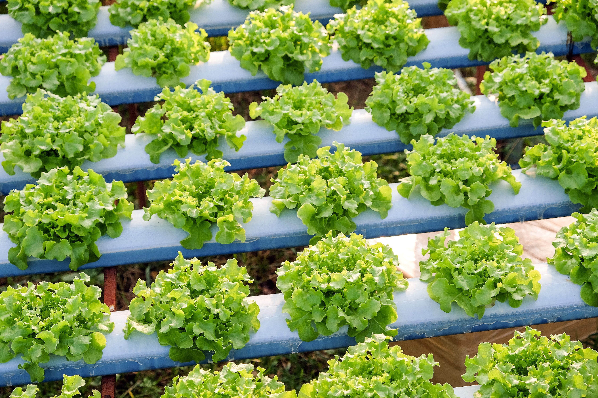
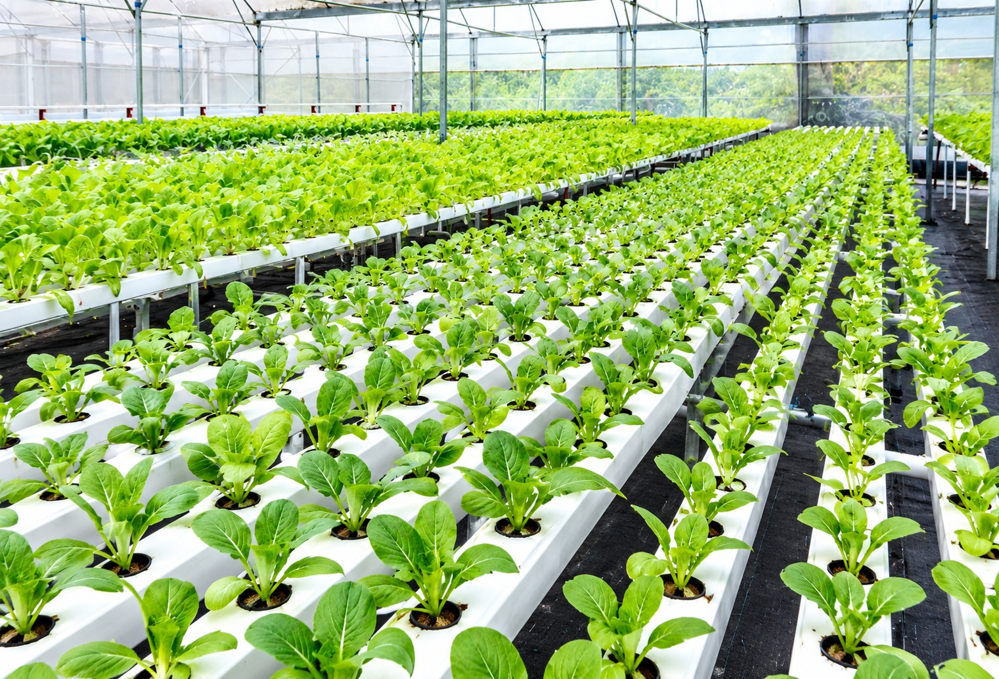
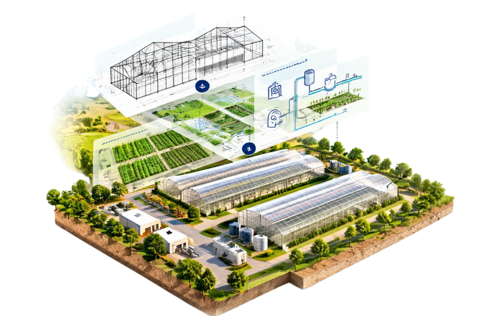
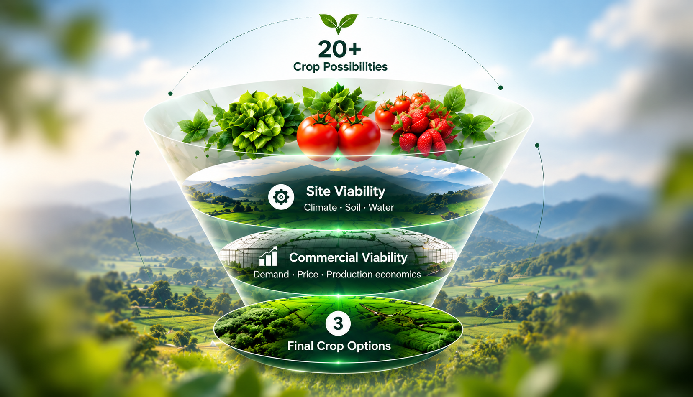
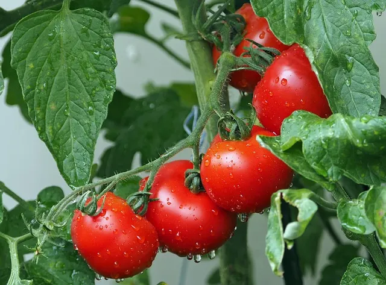
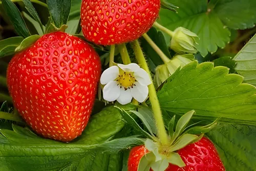
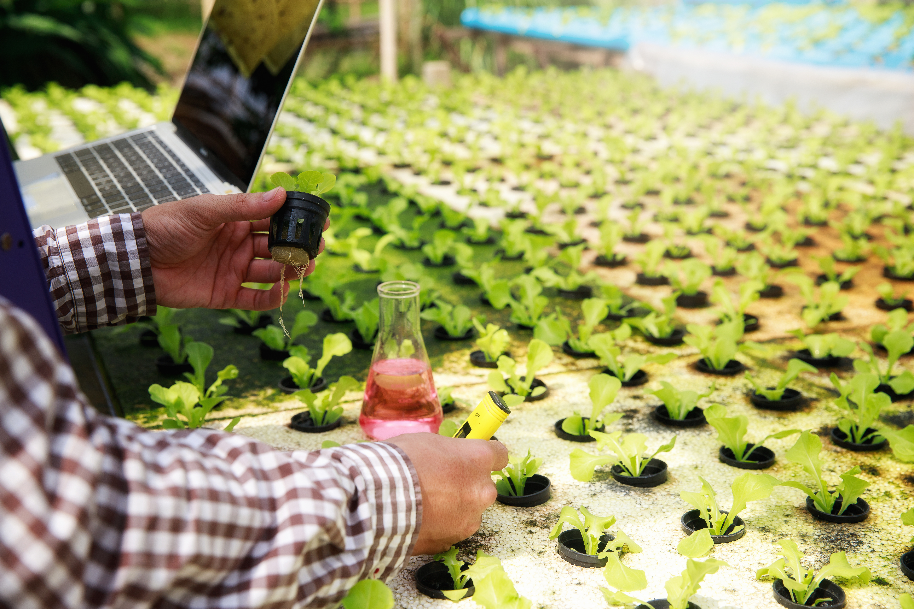
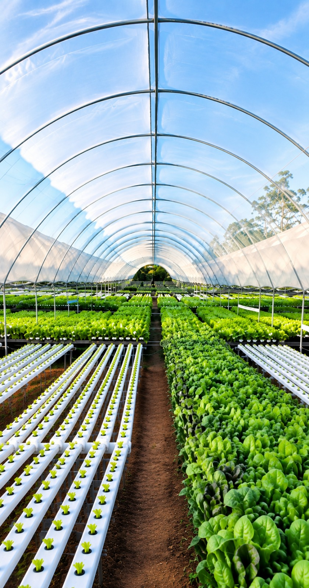
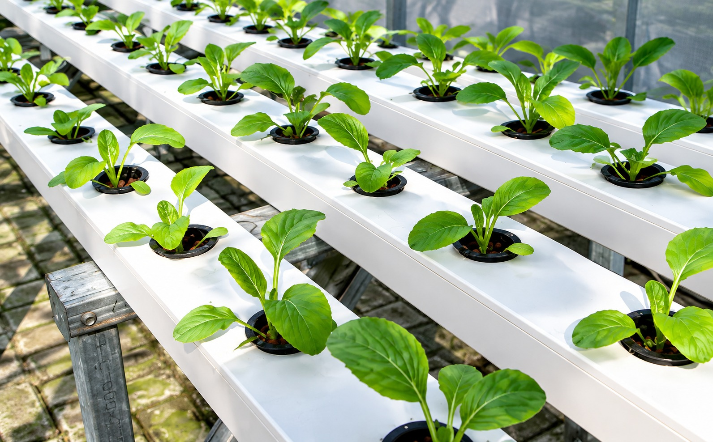

Conventional Greenhouse
Controlled and enhanced for higher yields.
Conventional Greenhouse
Controlled and enhanced
20–30%Higher Yield
20–40%Water Saving

We design, build and support protected farming enterprises that are profitable, sustainable and ready for tomorrow.
Our StoryWe combine site insights, crop intelligence and proven farming systems to create a plan that works in the real world.
Right analysis.
Better decisions.
Higher returns.
A clearer
farm plan
a stronger
tomorrow

Understand the location and resources to see what the land can truly support.

Identify viable crops and assess their commercial potential.

Design the right farming system for profitable and scalable production.
We analyse the site and its natural resources to determine what the land can realistically support for long-term productivity.
Explore Site Analysis
We analyse market demand, climate suitability, soil conditions, and resource availability to identify the best crops for your land.
Explore Crop Options

02
03From site analysis to harvest, we guide you at every step with practical solutions, modern technology and expert support.

We analyse soil, climate, water and market access to find the right opportunities.

We match your land’s potential with the most suitable and profitable crops.
We design and implement the right farming system – open field, protected or hydroponic.
We provide guidance on irrigation, nutrition, crop care and real-time monitoring.
We help you achieve higher yields, better quality and stronger market value.
Explore a range of greenhouse and farming models designed for your land, climate, budget and business vision.
Controlled and enhanced for higher yields.
Controlled and enhanced
Efficient, clean and scalable.

Climate-Controlled

Cost-effective and versatile.
Cost-effective and versatile

Protected cultivation for better quality.
High-density growing system.
A few simple inputs to get a personalized farm plan with crop suggestions, estimated investment and expected returns.